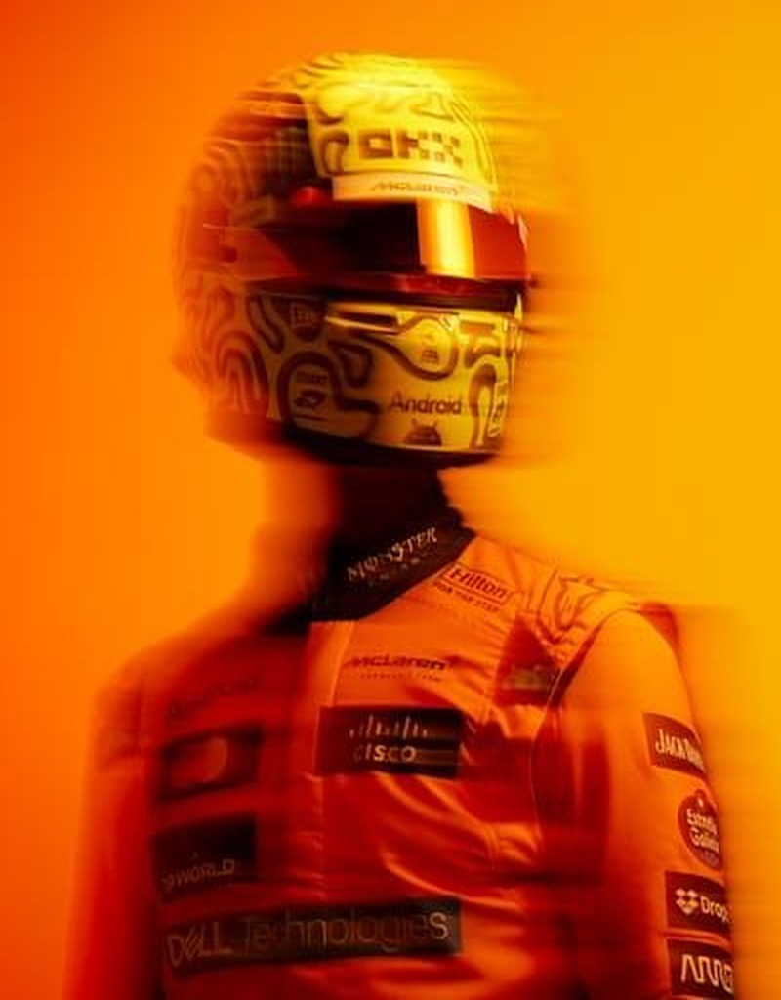

02 / clima
UNDER PRESSURE
r21 são paulo
🏁
austin gp · 48°c

colapso térmico
en texas el asfalto hirviente destruyó los neumáticos en 12 vueltas.
são paulo · 65% lluvia

nivelador de fuerzas
la lluvia neutraliza las ventajas aerodinámicas y deja la carrera en manos del piloto.
interlagos · 29°c asfalto
ventana segura

ventana fría mclaren (+1.32 puestos)
29°c de asfalto anulan el colapso térmico.
mclaren promedia su mejor rendimiento histórico en asfalto frío. el compuesto blando rinde hasta 24 vueltas sin ampollas de sobrecalentamiento.
histórico sc
73% carreras

neutralizaciones
alta probabilidad de banderas amarillas por despistes en junção y s de senna.
escala térmica pirelli
hoy en san pablo
29°C
ventana óptima
20°c frío
29°c
48°c austin
compuesto blando
c4 · 24 vueltas